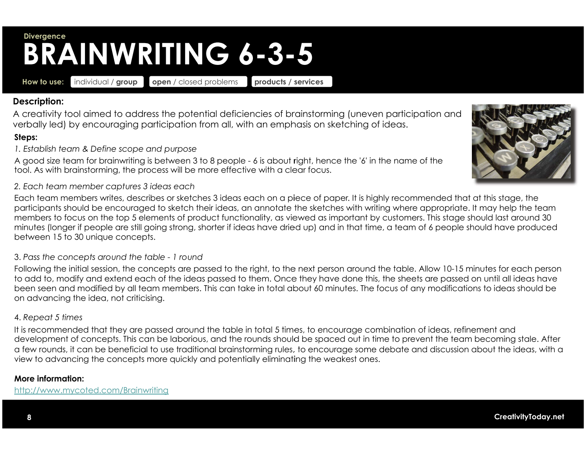
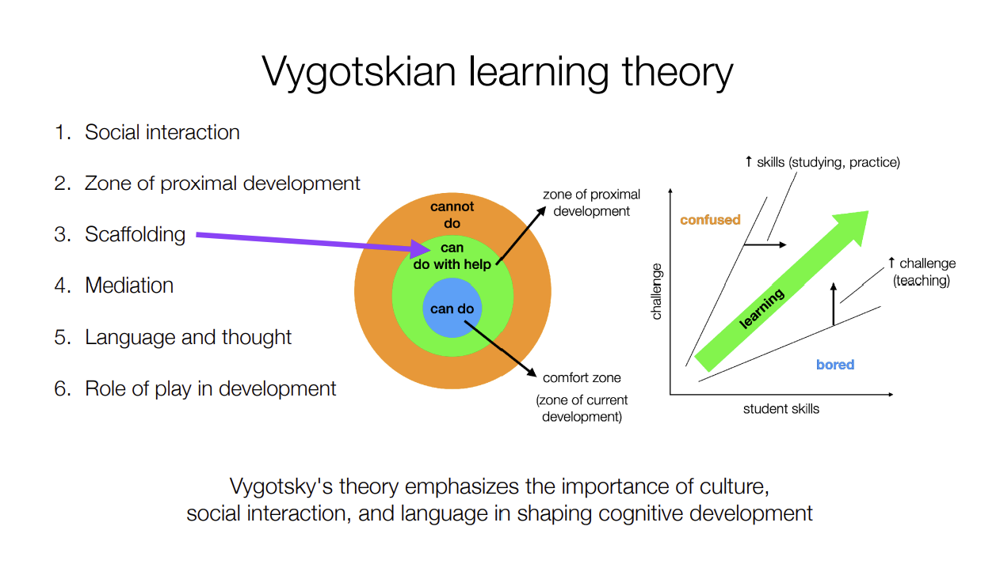

References
Personal work sourced and adapted from:
Process analysis
Praxis I design report
CIV102 design report and related documents
Position statement
Praxis II group drive
Full documents available upon request.CTMF information sourced from ESC101 and ESC102 Quercus materials. Below is a reference list with source extracts, similar to APA formatting
Due Diligence
Lofgreen, J., & Carrick, R. (2024). ESC102 Slide 05. University of Toronto. Retrieved from Quercus (learning management system).
Osborn Checklist
CreativityToday.net (n.d.). 27 Creativity Tools for Divergent and Convergent Thinking [uncurated].pdf. CreativityToday.net. Retrieved from Quercus (learning management system).
Measurement Matrix
Lofgreen, J., & Carrick, R. (2024). ESC101 Slide 17. University of Toronto. Retrieved from Quercus (learning management system).
Hoover Dam Model
Lofgreen, J., & Carrick, R. (2024). ESC101 Slide 02. University of Toronto. Retrieved from Quercus (learning management system).
Psychological Safety
Lofgreen, J., & Carrick, R. (2024). ESC101 Slide 10. University of Toronto. Retrieved from Quercus (learning management system).
Prototyping
Lofgreen, J., & Carrick, R. (2024). ESC102 Slide 30. University of Toronto. Retrieved from Quercus (learning management system).
Brainwriting 6-3-5
CreativityToday.net (n.d.). 27 Creativity Tools for Divergent and Convergent Thinking [uncurated].pdf. CreativityToday.net. Retrieved from Quercus (learning management system).
Vygotskian Zone of Proximal Development
Lofgreen, J., & Carrick, R. (2024). ESC101 Slide 01. University of Toronto. Retrieved from Quercus (learning management system).
